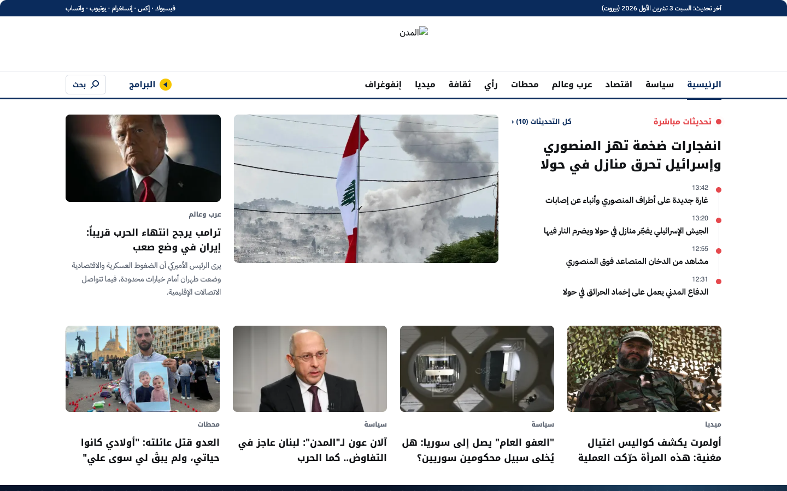
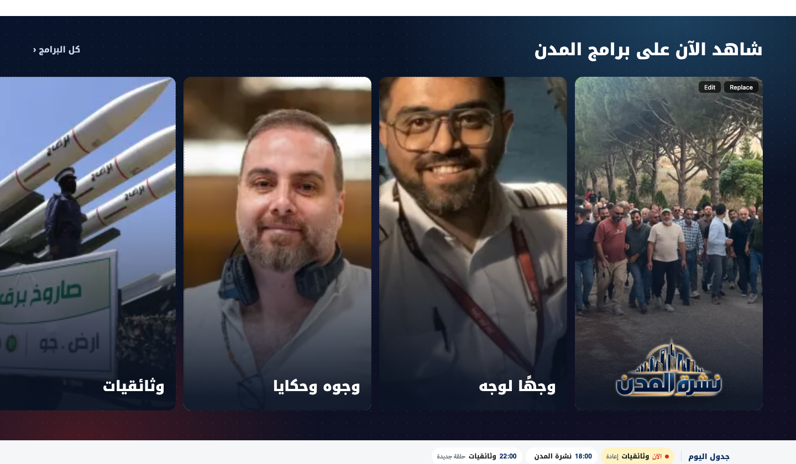
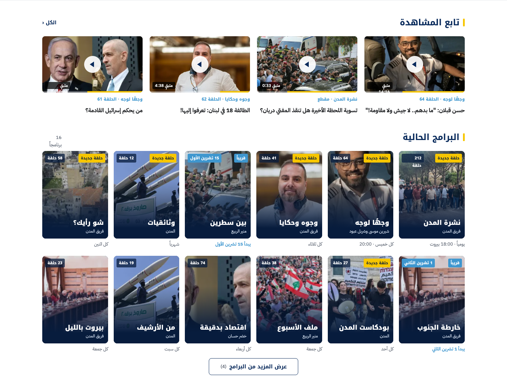
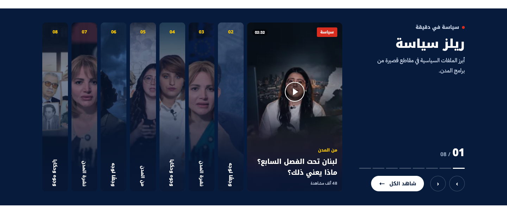
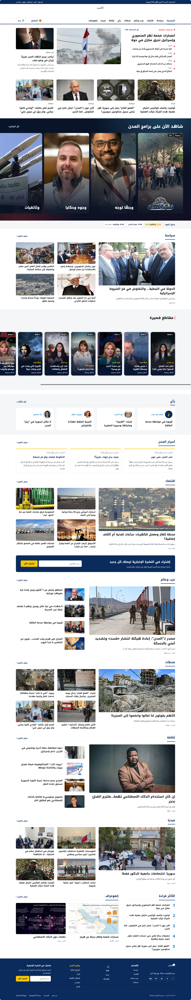
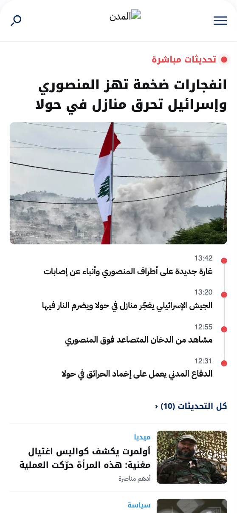
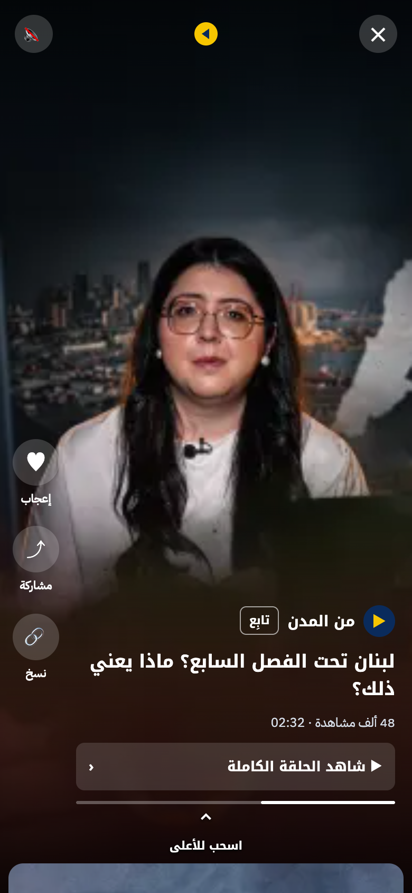

Bring discovery, programs and video playback into the main Almodon experience.

01
02Benchmark signal: Al Jazeera Net and The Guardian surface video within their news environments. A design pattern, not proven uplift.
Benchmark signal: Al Jazeera Net and The Guardian surface video within their news environments. A design pattern, not proven uplift.

02
03The lead story and live updates stay first. Programs and shorts follow as curated modules, on desktop and mobile.



PRIORITISATION RULE · Evaluate post-MVP items using viewing data, editorial effort and cost, not design appeal alone.
Rebranding is a separate phase and is not part of the MVP scope. This deck previews the Fadaat look: navy, gold and blue with the square motif.
No costs, delivery dates or engagement uplift are assumed before discovery and measurement.